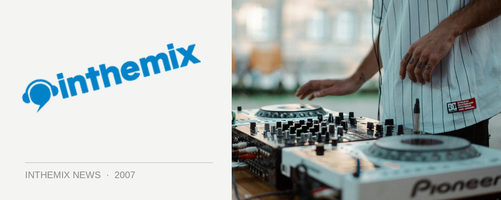

DNBBQ cooks it up across the country, presented by ITM!
As they prepare to drop their own mix compilation, one of Sydney’s most loved sources of drum n’ bass and dub (not to mention culinary delights) will be taking the DNBBQ experience across the country. Providing the tunes will be a fine collection of local selectors, as well as DnB legend Big Bud from the UK.
The DNBBQ compilation will feature 28 tracks of dub, grime, hip hop, dancehall and of course, all the different and delightful flavours of drum n’ bass. Packed full of beats and rhymes, it features a bunch of artists who have performed at the event including Lotek, Budspells, Semper-Fi, Kingwrasse, Rastawookie, Miso and of course Big Bud. Hailing form the UK, he’s been doing his thing since 1994 and in the time he’s released over 100 tracks and four albums, producing a steady stream of DnB and downtempo cuts with his seminal Soundtrax Records label.
Talk to any Sydney DnB head, and they’ll tell you how much they love DNBBQ as it’s one of the scene’s best sources of excellent music, relaxed vibes and tasty barbeque treats – so tasty in fact that they made it into the Sydney Morning Herald’s Good Food Guide in 2006! So check it out when it hits your city.
Check the dates below for the full lineup when DNBBQ fires up the barbeque in your town…
Sat Nov 3rd: Melbourne, Miss Libertine
Big Bud
Foreigndub
Miso
Semper Fi
Johnny Hooves
Jps
Ishu
B.Hopps
Sat Nov 17th: Byron Bay, Kohinur Hall
Big Bud
Kingwrasse
Foreigndub
Semper Fi
B.Hopps & Samson
Mista Micha
Silent Shadow
Davedog
Dj Operon
Agent Kaos feat. Vanessa Baker
Victim
Krayz Dayv
Samo
Sat Nov 24th: Adelaide, Crown & Sceptre
Big Bud
Foreigndub
Semper Fi
B.Hopps
More Tbc
Fri Dec 7th: Sydney, The Metro Theatre
Big Bud
Budspells
Miso
Lordz Of The Fly
The Versionairies
B.Hopps & Samson
Rollers Music (Ritual & Alf)
Semper Fi
Viceversa
Boot
Shuey
Dave Edwards
Fangle
Foreigndub
Wanna know more about DNBBQ? Check out the interview below with the ForeignDub collective!